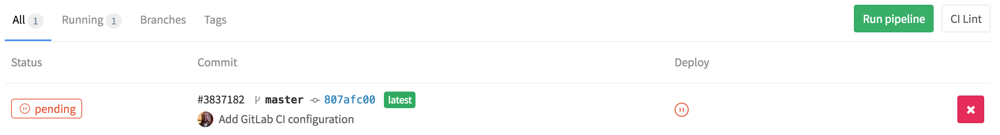

Using Apiary with GitLab
This article describes how to setup one way integration of GitLab with Apiary. Once complete, any change made in GitLab will be published on Apiary.
Overview
A one way integration is a connection between GitLab with Apiary through GitLab’s continuous integration (CI) where the API description (API Blueprint or Swagger) can be changed only from GitLab.
A push of a new version of an API description into the GitLab will trigger a CI deployment of the new version into Apiary. With this setup you won’t be able to modify your API description inside Apiary as no changes are propagated from Apiary back to the GitLab.
Optionally, you may also include the API tests in this integration. While in this article we will be using GitLab as the VCS and GitLab CI as examples, but it should be possible to create a similar setup using any other VCS and CI providers.
1. Create an API Project at Apiary
Create a new API Project in Apiary if you haven’t done so already. You may also
select an existing API project. You will need the subdomain of the API project
in which you are wanting to sync with GitLab. The subdomain can be found by
going to the settings for your API project and look at the heading “Settings for
subdomain
2. Generate Apiary Token
Generate your personal Apiary token.
This token will be needed to setup the CI later. Any pushes to GitLab will be propagated to Apiary using this token and therefore your credentials.
Please be sure to keep this token safe, as it allows any person or service with this token to have all of your privileges. It is also important that you do not check this token into your code and push it to GitLab.
3. Create or select a GitLab project
Create or select a project on GitLab that should host the API description. Make sure you have permissions to set variables and use the pipeline. To create a new project in GitLab, select “New Project” from the GitLab dashboard.
4. Commit your API description document
Commit your API description document to the respository and name it
apiary.apib. You may use a different path if desired, and if so, please note
what that is for steps below.
While you can use git locally and create commits to push into GitLab, you can
also use
GitLab’s web application
to add a file.
5. Add token as variable in GitLab
We will be pushing the API description document into Apiary by way of the Apiary CLI tool. In order for this tool to authenticate, it needs the token that was generated in the previous step.
Navigate to your GitLab project and select the gear in top right. From the drop
down, select “Variables.” This will prompt you for a key and a value. For the
key, enter APIARY_API_KEY, and for the value, enter the token from the
previous step.
GitLab has documentation for defining variables. Please consult this for more information on how to use variables in their CI feature.
6. Add GitLab CI configuration file
GitLab nice documentation for getting started with their CI feature. All of their CI functionality will show up under the “Pipelines” section for a repository.
This section denotes two tasks to complete to get CI working.
- Turn on Shared Runners
- Configure a
.gitlab-ci.yamlfile
To turn on Shared Runners, click the gear icon in the top right and select “Runners” from the list. Ensure the Shared Runners are turned on for your GitLab project.
Next, configure how GitLab CI works for this project. Below is an example
configuration file that installs the Apiary CLI tool and uses it to publish to
Apiary. The configuration file assumes you have set the token and have named
your file apiary.apib. To use it, change the <subdomain> text to your
subdomain for your API project in Apiary.
Additionally, if you used a different path above for the file, you’ll need to
change the path in the push command as
noted in our documentation.
image: "ruby:2.3"
before_script:
- gem install apiaryio
stages:
- deploy
deploy_job:
stage: deploy
script:
- apiary publish --api-name="<subdomain>"
only:
- master
Once this file is committed to master, your API description document will be
published to Apiary.

You should see any changes made in GitLab show up in Apiary automatically after the deploy script finishes in GitLab CI.
Conclusion
If you have followed all the steps in this article, your changes in your API description on GitLab will be pushed to Apiary. This means your API documentation is always living up to what has been merged in to the master branch of your API implementation!